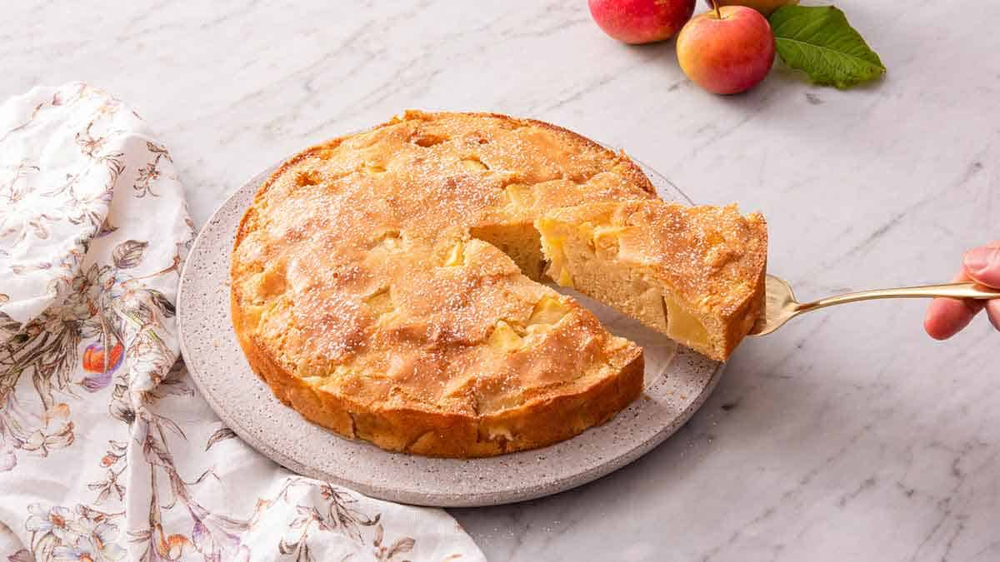

Apple Cake

A simple recipe for a delicious French apple cake. Hope you like butter!
I came across this recipe and immediately copied it into my recipe book! It's definitely my go-to for entertaining.
Ingredients
Makes 1 cake
- 1 c (120 g) flour
- 1 tsp baking powder
- 1/4 tsp salt
- 1/2 c (120 g) butter
- 2/3 c (130 g) sugar
- 2 eggs
- 1 tsp vanilla
- 1 tbsp rum (optional)
- 2 apples, peeled and cubed
Steps
- Butter a springform pan and preheat the oven to 180°C.
- In a small bowl, combine the flour, baking powder, and salt.
- In a medium bowl, cream the butter and sugar by hand or with a mixer.
- Add the eggs, one at a time, then the vanilla and rum (if using). Don't worry if the batter is lumpy.
- Sift in the flour mixture, and then fold in the apples.
- Pour the batter into the prepared pan. It won't seem like a lot, so spread it out as best you can.
- Bake for 30-40 minutes until slightly golden.